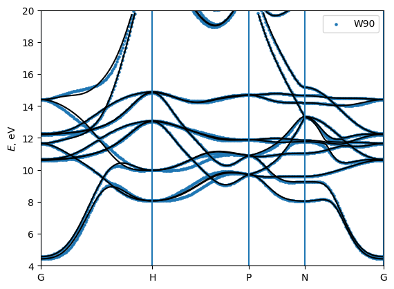
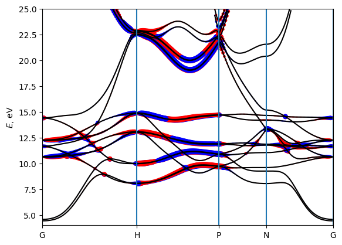
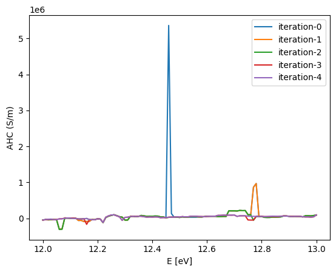
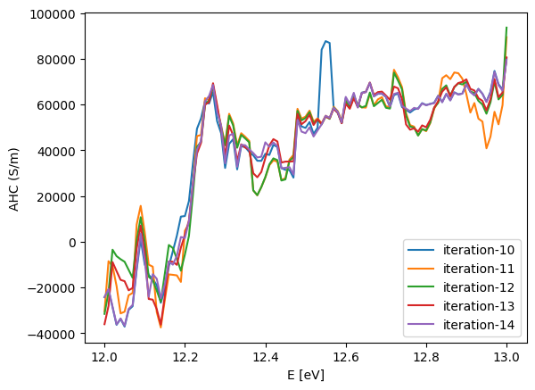
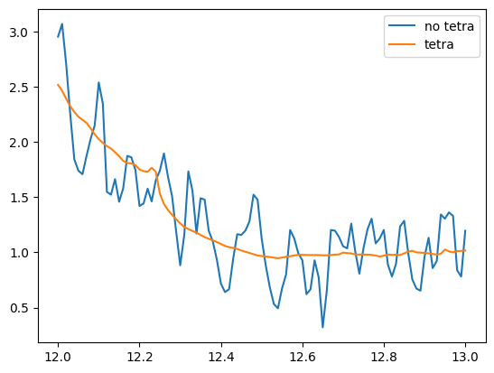
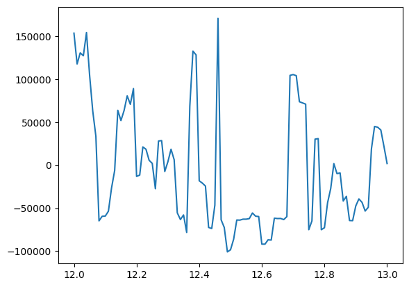
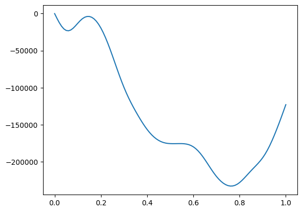

Basic tutorial: Interpolating bands, Berry curvatures, and integrating them
In this tutorial we will see how to compute band energies, Berry curvature, spins and anomalous Hall conductivity using WannierBerri code and further integrate them over the Brillouin zone to obtain Anomalous Hall conductivity, and other quantities of interest.
Preparation of a calculation:
import the needed modules
initialize a Parallel() or Serial() class
[ ]:
# Preliminary
# Set environment variables - not mandatory but recommended if you use Parallel()
#import os
#os.environ['OPENBLAS_NUM_THREADS'] = '1'
#os.environ['MKL_NUM_THREADS'] = '1'
import wannierberri as wberri
print (f"Using WannierBerri version {wberri.__version__}")
import numpy as np
import scipy
import matplotlib.pyplot as plt
%matplotlib inline
from termcolor import cprint
# This block is needed if you run this cell for a second time
# because one cannot initiate two parallel environments at a time
try:
parallel.shutdown()
except NameError:
pass
# Chiose one of the options:
parallel = wberri.Parallel(num_cpus=2)
#parallel = wberri.Parallel() # automatic detection
#parallel = wberri.Serial()
Using WannierBerri version 1.2.1
initializing ray with {'num_cpus': 2}
2025-05-14 14:32:33,054 INFO worker.py:1879 -- Started a local Ray instance. View the dashboard at http://127.0.0.1:8268
(raylet) [2025-05-14 15:05:33,010 E 39567 39567] (raylet) node_manager.cc:3287: 2 Workers (tasks / actors) killed due to memory pressure (OOM), 0 Workers crashed due to other reasons at node (ID: af808b920b9118613e7026c3115db53e3f56f1577207cc935a7423ad, IP: 128.179.188.185) over the last time period. To see more information about the Workers killed on this node, use `ray logs raylet.out -ip 128.179.188.185`
(raylet)
(raylet) Refer to the documentation on how to address the out of memory issue: https://docs.ray.io/en/latest/ray-core/scheduling/ray-oom-prevention.html. Consider provisioning more memory on this node or reducing task parallelism by requesting more CPUs per task. To adjust the kill threshold, set the environment variable `RAY_memory_usage_threshold` when starting Ray. To disable worker killing, set the environment variable `RAY_memory_monitor_refresh_ms` to zero.
Reading the system
Now we need to define the system that we are working on. Wannierberri can equally work with Wannier functions obtained by Wannier90 or other code (e.g. ASE or FPLO), as well as tight-binding models. This is done by constructing a System() class or one of its subclasses. Below, an example for Wannier90 is given; in advanced tutorials, some tight-binding models are also used.
[2]:
# Importing data from wannier90
system=wberri.System_w90(
seedname='w90_files/Fe',
berry=True, # needed to calculate "external terms" of Berry connection or curvature , reads ".mmn" file
spin = True , # needed for spin properties, reads ".spn" file
)
# Setting the pointgroup from the symmetry operations
import irrep
spacegroup = irrep.spacegroup.SpaceGroup( cell=(system.real_lattice, [[0,0,0]], [1]), # only 1 Fe atoms at origin
spinor = True,
magmom = [[0,0,1]], # magnetic moment along z
include_TR = True, # include symmetries that flip the spin
)
system.set_pointgroup(spacegroup=spacegroup)
# generators=["Inversion","C4z","TimeReversal*C2x"]
# system.set_pointgroup(symmetry_gen=generators)
kwargs for eig are {'read_npz': True, 'write_npz': True}
calling w90 file with w90_files/Fe, eig, tags=['data'], read_npz=True, write_npz=True, kwargs={}
kwargs for mmn are {'read_npz': True, 'write_npz': True}
calling w90 file with w90_files/Fe, mmn, tags=['data', 'neighbours', 'G'], read_npz=True, write_npz=True, kwargs={'npar': 32}
kwargs for spn are {'read_npz': True, 'write_npz': False}
calling w90 file with w90_files/Fe, spn, tags=['data'], read_npz=True, write_npz=False, kwargs={}
----------
SPN
---------
reading w90_files/Fe.spn : Created on 7May2022 at 16: 2:47
----------
SPN OK
---------
Reading restart information from file w90_files/Fe.chk :
Time to read .chk : 0.005883693695068359
setting Rvec
expjphase1 (1, 18, 12)
Real-space lattice:
[[ 1.4349963 1.4349963 1.4349963]
[-1.4349963 1.4349963 1.4349963]
[-1.4349963 -1.4349963 1.4349963]]
Number of wannier functions: 18
Number of R points: 113
Recommended size of FFT grid [4 4 4]
Interpolation on a path
[3]:
# Evaluate bands, Berry curvature, and spin along a path GHPNG
# all kpoints given in reduced coordinates
path=wberri.Path(system,
nodes=[
[0.0000, 0.0000, 0.0000 ], # G
[0.500 ,-0.5000, -0.5000], # H
[0.7500, 0.2500, -0.2500], # P
[0.5000, 0.0000, -0.5000], # N
[0.0000, 0.0000, 0.000 ] ] , # G
labels=["G","H","P","N","G"],
length=200 ) # length [ Ang] ~= 2*pi/dk
# uncomment some of these lines to see what path you have generated
#print (path)
#print (path.getKline())
#for K in path.get_K_list():
# print (K)
#print (np.array([K.K for K in path.get_K_list()]))
Running a calculation: calculators and results
The calculation is called using the function `run() <https://wannier-berri.org/docs/run.html>`__ :
result=wberri.run(system,
grid=path,
calculators = {"key" : calculator},
parallel = parallel,
print_Kpoints = False)
Here, apart from the already known ingredients, we need to define objects of some subclass of `Calculator <https://wannier-berri.org/docs/calculators.html#wannierberri.calculators.Calculator>`__. A Calculator is a callable object which returns some `Result <https://wannier-berri.org/docs/result.html>`__. If you code another calculator, you can calculate other things using the machinery of WannierBerri, but that is not a part of this basic tutorial.
Further, results are packed into `ResultDict <https://wannier-berri.org/docs/result.html#wannierberri.result.ResultDict>`__ and returned.
Tabulating Berry curvature and spin
To run a tabulation one needs to compose a dictionary, where keys are any arbitrary strings to label further tabulation results, and the values are subclasses of `Tabulator <https://wannier-berri.org/docs/calculators.html#wannierberri.calculators.tabulate.Tabulator>`__
Next, we pack them into another class called `TabulatorAll <https://wannier-berri.org/docs/calculators.html#wannierberri.calculators.TabulatorAll>`__, which represents a complex `Calculator <https://wannier-berri.org/docs/calculators.html#wannierberri.calculators.Calculator>`__
[4]:
tabulators = { "energy": wberri.calculators.tabulate.Energy(),
"berry_curvature" : wberri.calculators.tabulate.BerryCurvature(),
"spin" : wberri.calculators.tabulate.Spin(),
}
tab_all_path = wberri.calculators.TabulatorAll(
tabulators,
ibands = np.arange(0,18),
mode = "path"
)
Running a calculation
Now run the calculation using the function `run() <https://wannier-berri.org/docs/run.html>`__ . This will return an object of class `ResultDict() <https://wannier-berri.org/docs/result.html#wannierberri.result.ResultDict>`__ This object contains all results of the calculations, but in this case we have only one, which is marked "tabulate"
[5]:
result=wberri.run(system,
grid=path,
calculators = {"tabulate" : tab_all_path},
parallel = parallel,
print_Kpoints = False)
print (result.results)
path_result = result.results["tabulate"]
Starting run()
Using the follwing calculators :
############################################################
'tabulate' : <wannierberri.calculators.tabulate.TabulatorAll object at 0x754f2cfa9610> :
TabulatorAll - a pack of all k-resolved calculators (Tabulators)
Includes the following tabulators :
--------------------------------------------------
"energy" : <wannierberri.calculators.tabulate.Energy object at 0x754f7c0bb2f0> : calculator not described
"berry_curvature" : <wannierberri.calculators.tabulate.BerryCurvature object at 0x754f2cfaa2d0> : calculator not described
"spin" : <wannierberri.calculators.tabulate.Spin object at 0x754f2cfab5c0> : Spin expectation :math:` \langle u | \mathbf{\sigma} | u \rangle`
"Energy" : <wannierberri.calculators.tabulate.Energy object at 0x754f2cfab320> : calculator not described
--------------------------------------------------
############################################################
Calculation along a path - checking calculators for compatibility
tabulate <wannierberri.calculators.tabulate.TabulatorAll object at 0x754f2cfa9610>
All calculators are compatible
Symmetrization switched off for Path
Grid is regular
The set of k points is a Path() with 215 points and labels {0: 'G', 70: 'H', 130: 'P', 165: 'N', 214: 'G'}
generating K_list
Done
Done, sum of weights:215.0
processing 215 K points : using 2 processes.
# K-points calculated Wall time (sec) Est. remaining (sec)
/home/stepan/github/wannier-berri/wannierberri/grid/path.py:163: UserWarning: symmetry is not used for a tabulation along path
warnings.warn("symmetry is not used for a tabulation along path")
time for processing 215 K-points on 2 processes: 1.9922 ; per K-point 0.0093 ; proc-sec per K-point 0.0185
time1 = 0.008013725280761719
Totally processed 215 K-points
run() finished
{'tabulate': <wannierberri.result.tabresult.TABresult object at 0x754f1ff35820>}
Alternative shortcut:
[6]:
path , path_result= wberri.evaluate_k_path(system=system,
nodes=[
[0.0000, 0.0000, 0.0000 ], # G
[0.500 ,-0.5000, -0.5000], # H
[0.7500, 0.2500, -0.2500], # P
[0.5000, 0.0000, -0.5000], # N
[0.0000, 0.0000, 0.000 ] ] , # G
labels=["G","H","P","N","G"],
length=200 ,
quantities=["berry_curvature","spin"])
Starting run()
Using the follwing calculators :
############################################################
'tabulate' : <wannierberri.calculators.tabulate.TabulatorAll object at 0x754f7c2bf200> :
TabulatorAll - a pack of all k-resolved calculators (Tabulators)
Includes the following tabulators :
--------------------------------------------------
"berry_curvature" : <wannierberri.calculators.tabulate.BerryCurvature object at 0x754f0d253ad0> : calculator not described
"spin" : <wannierberri.calculators.tabulate.Spin object at 0x754f0cb28050> : Spin expectation :math:` \langle u | \mathbf{\sigma} | u \rangle`
"Energy" : <wannierberri.calculators.tabulate.Energy object at 0x754f1ff750a0> : calculator not described
--------------------------------------------------
############################################################
Calculation along a path - checking calculators for compatibility
tabulate <wannierberri.calculators.tabulate.TabulatorAll object at 0x754f7c2bf200>
All calculators are compatible
Symmetrization switched off for Path
Grid is regular
The set of k points is a Path() with 215 points and labels {0: 'G', 70: 'H', 130: 'P', 165: 'N', 214: 'G'}
generating K_list
Done
Done, sum of weights:215.0
processing 215 K points : in serial.
# K-points calculated Wall time (sec) Est. remaining (sec)
time for processing 215 K-points in serial: 1.5860 ; per K-point 0.0074 ; proc-sec per K-point 0.0074
time1 = 0.005733966827392578
Totally processed 215 K-points
run() finished
Plotting the results
The `TABresult <https://wannier-berri.org/docs/result.html#wannierberri.result.TABresult>`__ object already provides methods to plot the results. (As well as one can extract the data and plot them by other means). Below let’s plot the interpolated bands and compare with those obtained in QE. (file “bands/Fe_bands_pw.dat” is already provided)
[7]:
# plot the bands and compare with QuantumEspresso
EF = 12.6
# Import the pre-computed bands from quantum espresso
A = np.loadtxt(open("bands/Fe_bands_pw.dat","r"))
bohr_ang = scipy.constants.physical_constants['Bohr radius'][0] / 1e-10
alatt = 5.4235* bohr_ang
A[:,0]*= 2*np.pi/alatt
A[:,1]-=EF
# plot it as dots
plt.scatter (A[:,0],A[:,1],s=5,label = "QE")
path_result.plot_path_fat( path,
quantity=None,
save_file="Fe_bands+QE.pdf",
Eshift=EF,
Emin=-10, Emax=50,
iband=None,
mode="fatband",
fatfactor=20,
cut_k=False,
close_fig=False,
show_fig=False,
label = "WB"
)
plt.legend()
plt.show()
plt.close()

[8]:
# plot the bands and compare with wannier90
A = np.loadtxt(open("bands/Fe_bands_w90.dat","r"))
plt.scatter (A[:,0],A[:,1],s=5,label = "W90")
path_result.plot_path_fat( path,
quantity=None,
save_file="Fe_bands+w90.pdf",
Eshift=0,
Emin=4, Emax=20,
iband=None,
mode="fatband",
fatfactor=20,
cut_k=False,
close_fig=False,
show_fig=False,
label = "WB"
)
plt.legend()
plt.show()
plt.close()

[9]:
# plot the Berry curvature
path_result.plot_path_fat( path,
quantity='berry_curvature',
component='z',
save_file=None, #"Fe_bands+berry.pdf",
Eshift=0,
Emin=4, Emax=25,
iband=None,
mode="fatband",
fatfactor=4,
cut_k=False,
close_fig=False,
show_fig=False,
)
plt.show()
plt.close()
# The size of the dots corresponds to the magnitude of BC on a logarithmic scale

Problem 1:
modify the path
plot the “z” component of spin along it (without .
do not plot QE or W90 bands in this case
Hint : look here for a proper Calculator https://wannier-berri.org/docs/calculators.html#tabulating
[10]:
# put the necessary code here
Get the data and do whatever you want
[11]:
k=path.getKline()
E=path_result.get_data(quantity='Energy',iband=(10,11))
curv=path_result.get_data(quantity='berry_curvature',iband=(10,11),component="z")
print (k.shape, E.shape, curv.shape)
(215,) (215, 2) (215, 2)
Calaculation on a 3D grid
Now let’s investigate how Berry curvature behaves in the 3D Brillouin zone. For that we need to set a grid, which can be done in several ways, see input parameters here
Most important to recall, is that in WB one sets two grids : the FFT grid and the K-grid (NKdiv). this is important for running the calculation. However, the final; result depends only on their product.
[12]:
# Set a grid
grid = wberri.Grid(system, length=50 ) # length [ Ang] ~= 2*pi/dk
#grid = wberri.Grid(system, NK=[24,24,24], NKFFT=4)
#grid = wberri.Grid(system, NKdiv=6, NKFFT=4)
Minimal symmetric FFT grid : [4 4 4]
We can use the same tabulators, but now we pack them into TabulatorAll in “grid” mode
[13]:
tabulators = { "Energy": wberri.calculators.tabulate.Energy(),
"berry_curvature" : wberri.calculators.tabulate.BerryCurvature(),
}
tab_all_grid = wberri.calculators.TabulatorAll(
tabulators,
ibands = np.arange(0,18),
mode = "grid"
)
And we run the calculation in the same way
[14]:
result=wberri.run(system,
grid=grid,
calculators = {"tabulate" : tab_all_grid},
parallel = parallel,
print_Kpoints = True)
print (result.results)
grid_result = result.results["tabulate"]
Starting run()
Using the follwing calculators :
############################################################
'tabulate' : <wannierberri.calculators.tabulate.TabulatorAll object at 0x754e886b9100> :
TabulatorAll - a pack of all k-resolved calculators (Tabulators)
Includes the following tabulators :
--------------------------------------------------
"Energy" : <wannierberri.calculators.tabulate.Energy object at 0x754e8852a4b0> : calculator not described
"berry_curvature" : <wannierberri.calculators.tabulate.BerryCurvature object at 0x754e886ba0f0> : calculator not described
--------------------------------------------------
############################################################
Calculation on grid - checking calculators for compatibility
tabulate <wannierberri.calculators.tabulate.TabulatorAll object at 0x754e886b9100>
All calculators are compatible
Grid is regular
The set of k points is a Grid() with NKdiv=[5 5 5], NKFFT=[5 5 5], NKtot=[25 25 25]
generating K_list
Done in 0.0002799034118652344 s
excluding symmetry-equivalent K-points from initial grid
Done in 0.003501415252685547 s
K_list contains 18 Irreducible points(14.4%) out of initial 5x5x5=125 grid
Done, sum of weights:1.0000000000000004
iteration 0 - 18 points. New points are:
K-point 0 : coord in rec.lattice = [ 0.000000 , 0.000000 , 0.000000 ], refinement level:0, factor = 0.008dK=[0.2 0.2 0.2]
K-point 1 : coord in rec.lattice = [ 0.000000 , 0.200000 , 0.000000 ], refinement level:0, factor = 0.032dK=[0.2 0.2 0.2]
K-point 2 : coord in rec.lattice = [ 0.000000 , 0.400000 , 0.000000 ], refinement level:0, factor = 0.032dK=[0.2 0.2 0.2]
K-point 3 : coord in rec.lattice = [ 0.200000 , 0.000000 , 0.000000 ], refinement level:0, factor = 0.064dK=[0.2 0.2 0.2]
K-point 4 : coord in rec.lattice = [ 0.200000 , 0.200000 , 0.200000 ], refinement level:0, factor = 0.016dK=[0.2 0.2 0.2]
K-point 5 : coord in rec.lattice = [ 0.200000 , 0.600000 , 0.200000 ], refinement level:0, factor = 0.064dK=[0.2 0.2 0.2]
K-point 6 : coord in rec.lattice = [ 0.400000 , 0.000000 , 0.000000 ], refinement level:0, factor = 0.064dK=[0.2 0.2 0.2]
K-point 7 : coord in rec.lattice = [ 0.400000 , 0.200000 , 0.000000 ], refinement level:0, factor = 0.064dK=[0.2 0.2 0.2]
K-point 8 : coord in rec.lattice = [ 0.400000 , 0.200000 , 0.200000 ], refinement level:0, factor = 0.064dK=[0.2 0.2 0.2]
K-point 9 : coord in rec.lattice = [ 0.400000 , 0.400000 , 0.400000 ], refinement level:0, factor = 0.016dK=[0.2 0.2 0.2]
K-point 10 : coord in rec.lattice = [ 0.600000 , 0.200000 , 0.000000 ], refinement level:0, factor = 0.12800000000000006dK=[0.2 0.2 0.2]
K-point 11 : coord in rec.lattice = [ 0.600000 , 0.200000 , 0.200000 ], refinement level:0, factor = 0.064dK=[0.2 0.2 0.2]
K-point 12 : coord in rec.lattice = [ 0.600000 , 0.400000 , 0.200000 ], refinement level:0, factor = 0.064dK=[0.2 0.2 0.2]
K-point 13 : coord in rec.lattice = [ 0.600000 , 0.400000 , 0.400000 ], refinement level:0, factor = 0.032dK=[0.2 0.2 0.2]
K-point 14 : coord in rec.lattice = [ 0.800000 , 0.200000 , 0.000000 ], refinement level:0, factor = 0.12800000000000006dK=[0.2 0.2 0.2]
K-point 15 : coord in rec.lattice = [ 0.800000 , 0.200000 , 0.200000 ], refinement level:0, factor = 0.032dK=[0.2 0.2 0.2]
K-point 16 : coord in rec.lattice = [ 0.800000 , 0.400000 , 0.000000 ], refinement level:0, factor = 0.064dK=[0.2 0.2 0.2]
K-point 17 : coord in rec.lattice = [ 0.800000 , 0.400000 , 0.200000 ], refinement level:0, factor = 0.064dK=[0.2 0.2 0.2]
processing 18 K points : using 2 processes.
# K-points calculated Wall time (sec) Est. remaining (sec)
time for processing 18 K-points on 2 processes: 2.0430 ; per K-point 0.1135 ; proc-sec per K-point 0.2270
time1 = 0.005402565002441406
setting the grid
setting new kpoints
finding equivalent kpoints
collecting
collecting: to_grid : 0.0702202320098877
collecting: TABresult : 0.0002505779266357422
collecting - OK : 0.07048654556274414 (1.5735626220703125e-05)
Totally processed 18 K-points
run() finished
{'tabulate': <wannierberri.result.tabresult.TABresult object at 0x754e8853c590>}
Writing the FermiSurfer files
You may see that conversion to text format takes time. so convert only those components that you really need for plotting.
[15]:
grid_result.write_frmsf(name="Fe_grid", quantity="berry_curvature",
components="z",
)
Enk (25, 25, 25, 18)
using a pool of 32 processes to write txt frmsf of 489 points per process
using a pool of 32 processes to write txt frmsf of 489 points per process
using a pool of 32 processes to write txt frmsf of 489 points per process
using a pool of 32 processes to write txt frmsf of 489 points per process
using a pool of 32 processes to write txt frmsf of 489 points per process
using a pool of 32 processes to write txt frmsf of 489 points per process
using a pool of 32 processes to write txt frmsf of 489 points per process
using a pool of 32 processes to write txt frmsf of 489 points per process
using a pool of 32 processes to write txt frmsf of 489 points per process
using a pool of 32 processes to write txt frmsf of 489 points per process
using a pool of 32 processes to write txt frmsf of 489 points per process
using a pool of 32 processes to write txt frmsf of 489 points per process
using a pool of 32 processes to write txt frmsf of 489 points per process
using a pool of 32 processes to write txt frmsf of 489 points per process
using a pool of 32 processes to write txt frmsf of 489 points per process
using a pool of 32 processes to write txt frmsf of 489 points per process
using a pool of 32 processes to write txt frmsf of 489 points per process
using a pool of 32 processes to write txt frmsf of 489 points per process
Xnk (25, 25, 25, 18)
using a pool of 32 processes to write txt frmsf of 489 points per process
using a pool of 32 processes to write txt frmsf of 489 points per process
using a pool of 32 processes to write txt frmsf of 489 points per process
using a pool of 32 processes to write txt frmsf of 489 points per process
using a pool of 32 processes to write txt frmsf of 489 points per process
using a pool of 32 processes to write txt frmsf of 489 points per process
using a pool of 32 processes to write txt frmsf of 489 points per process
using a pool of 32 processes to write txt frmsf of 489 points per process
using a pool of 32 processes to write txt frmsf of 489 points per process
using a pool of 32 processes to write txt frmsf of 489 points per process
using a pool of 32 processes to write txt frmsf of 489 points per process
using a pool of 32 processes to write txt frmsf of 489 points per process
using a pool of 32 processes to write txt frmsf of 489 points per process
using a pool of 32 processes to write txt frmsf of 489 points per process
using a pool of 32 processes to write txt frmsf of 489 points per process
using a pool of 32 processes to write txt frmsf of 489 points per process
using a pool of 32 processes to write txt frmsf of 489 points per process
using a pool of 32 processes to write txt frmsf of 489 points per process
[15]:
(6.911812782287598, 0.005792140960693359)
[16]:
# Now we got some .frmsf files
!ls -al *.frmsf
# !rm *.frmsf
-rw-rw-r-- 1 stepan stepan 6592280 May 14 14:32 Fe_grid_berry_curvature-z.frmsf
[17]:
# let's look at them using the Fermisurfer! (https://fermisurfer.osdn.jp/)
!fermisurfer Fe_grid_berry_curvature-z.frmsf
/bin/bash: line 1: fermisurfer: command not found
Analyze the tabulated data
[18]:
# You may get the data as numpy arrays via:
Energy = grid_result.get_data(iband=5, quantity='Energy')
ahc = grid_result.get_data(iband=5, quantity='berry_curvature',component='z')
print(ahc.shape,Energy.shape)
(25, 25, 25) (25, 25, 25)
Problem 2 :
fill the missing parts and evaluate the Berry curvature summed over all states below EF = 12.6 eV. Plot in on a plane k3=const (in reduced coordinates)
[19]:
# example : find the total Berry curvature of occupied states
# on the plane (k1,k2), k3=const (in reduced coordinates)
Berry_occ = 0
k3 = 9
EF=12.4
for ib in range(18):
Energy =
ahc =
ahc [Energy>EF] = 0
Berry_occ += ahc
plt.contour(Energy,levels = [EF],linewidths=0.5,colors='black')
shw = plt.imshow(Berry_occ,vmin=-10,vmax=10,cmap="jet")
bar = plt.colorbar(shw)
Cell In[19], line 7
Energy =
^
SyntaxError: invalid syntax
Integration on a grid: anomalous Hall conductivity
Now, after we saw that the Berry curvature changes rapidly in the k-space, we understand that to get the precise value of AHC (\ref{eq:ahc}) defined as a Fermi-sea integral of Berry curvature
\begin{equation} \sigma^{\rm AHC}_{xy} = -\frac{e^2}{\hbar} \sum_n^{\rm occ} \int\frac{d\mathbf{k}}{(2\pi)^3} \Omega^n_\gamma \label{eq:ahc}\tag{1} \end{equation}
we need a very dense grid. The calculation is done again, by using the calculators. AHC may be viewed as a function of the Fermi level. Such calculators are called StaticCalculator , because the corresponding effects can be measured in static fields. (as opposed to dynamic calculators, see below).
[20]:
calculators = {}
Efermi = np.linspace(12,13,101)
omega = np.linspace(0,1.,101)
# Set a grid
grid = wberri.Grid(system, length=50 ) # length [ Ang] ~= 2*pi/dk
calculators ["ahc"] = wberri.calculators.static.AHC(Efermi=Efermi)
result_run = wberri.run(system,
grid=grid,
calculators = calculators,
parallel=parallel,
adpt_num_iter=5,
fout_name='Fe',
restart=False,
file_Klist="Klist_ahc.pickle" # needed to restart a calculation in future
)
Minimal symmetric FFT grid : [4 4 4]
Starting run()
Using the follwing calculators :
############################################################
'ahc' : <wannierberri.calculators.static.AHC object at 0x754e886a3560> : Anomalous Hall conductivity (:math:`s^3 \cdot A^2 / (kg \cdot m^3) = S/m`)
| With Fermi sea integral Eq(11) in `Ref <https://www.nature.com/articles/s41524-021-00498-5>`__
| Output: :math:`O = -e^2/\hbar \int [dk] \Omega f`
| Instruction: :math:`j_\alpha = \sigma_{\alpha\beta} E_\beta = \epsilon_{\alpha\beta\delta} O_\delta E_\beta`
############################################################
Calculation on grid - checking calculators for compatibility
ahc <wannierberri.calculators.static.AHC object at 0x754e886a3560>
All calculators are compatible
Grid is regular
The set of k points is a Grid() with NKdiv=[5 5 5], NKFFT=[5 5 5], NKtot=[25 25 25]
generating K_list
Done in 0.0007302761077880859 s
excluding symmetry-equivalent K-points from initial grid
Done in 0.006949186325073242 s
K_list contains 18 Irreducible points(14.4%) out of initial 5x5x5=125 grid
Done, sum of weights:1.0000000000000004
processing 18 K points : using 2 processes.
# K-points calculated Wall time (sec) Est. remaining (sec)
time for processing 18 K-points on 2 processes: 0.5668 ; per K-point 0.0315 ; proc-sec per K-point 0.0630
time1 = 0.00035452842712402344
time2 = 0.0017876625061035156
exclude dbg 1 4 [-0.05 -0.05 0.05] [ 0.05 -0.05 -0.05] 8 8
exclude dbg 1 3 [-0.05 -0.05 0.05] [-0.05 0.05 0.05] 8 8
exclude dbg 1 6 [-0.05 -0.05 0.05] [ 0.05 0.05 -0.05] 8 8
exclude dbg 0 7 [-0.05 -0.05 -0.05] [0.05 0.05 0.05] 8 8
exclude dbg 2 5 [-0.05 0.05 -0.05] [ 0.05 -0.05 0.05] 8 8
checking for equivalent points in all points (of new 3 points)
excluded 0 points
sum of weights now :1.0000000000000004
Writing file_Klist_factor_changed to Klist_ahc.changed_factors.txt
processing 3 K points : using 2 processes.
# K-points calculated Wall time (sec) Est. remaining (sec)
time for processing 3 K-points on 2 processes: 0.1161 ; per K-point 0.0387 ; proc-sec per K-point 0.0774
time1 = 0.0001342296600341797
time2 = 0.0015513896942138672
exclude dbg 1 4 [0.15 0.55 0.25] [0.25 0.55 0.15] 8 8
exclude dbg 3 6 [0.15 0.65 0.25] [0.25 0.65 0.15] 8 8
checking for equivalent points in all points (of new 6 points)
excluded 0 points
sum of weights now :1.0000000000000004
Writing file_Klist_factor_changed to Klist_ahc.changed_factors.txt
processing 6 K points : using 2 processes.
# K-points calculated Wall time (sec) Est. remaining (sec)
time for processing 6 K-points on 2 processes: 0.1915 ; per K-point 0.0319 ; proc-sec per K-point 0.0638
time1 = 0.0001652240753173828
time2 = 0.0014939308166503906
exclude dbg 1 6 [0.35 0.15 0.25] [0.45 0.25 0.15] 8 8
exclude dbg 1 3 [0.35 0.35 0.45] [0.35 0.45 0.45] 8 8
exclude dbg 1 4 [0.35 0.35 0.45] [0.45 0.35 0.35] 8 8
exclude dbg 1 6 [0.35 0.35 0.45] [0.45 0.45 0.35] 8 8
checking for equivalent points in all points (of new 12 points)
excluded 0 points
sum of weights now :1.0000000000000004
Writing file_Klist_factor_changed to Klist_ahc.changed_factors.txt
processing 12 K points : using 2 processes.
# K-points calculated Wall time (sec) Est. remaining (sec)
time for processing 12 K-points on 2 processes: 0.3359 ; per K-point 0.0280 ; proc-sec per K-point 0.0560
time1 = 0.00027108192443847656
time2 = 0.0015766620635986328
exclude dbg 1 6 [0.55 0.15 0.25] [0.65 0.25 0.15] 8 8
exclude dbg 1 3 [0.425 0.425 0.475] [0.425 0.475 0.475] 8 8
exclude dbg 1 4 [0.425 0.425 0.475] [0.475 0.425 0.425] 8 8
exclude dbg 1 6 [0.425 0.425 0.475] [0.475 0.475 0.425] 8 8
checking for equivalent points in all points (of new 12 points)
exclude dbg 32 41 [0.45 0.15 0.25] [0.55 0.25 0.15] 51 12
excluded 1 points
sum of weights now :1.0000000000000004
Writing file_Klist_factor_changed to Klist_ahc.changed_factors.txt
processing 11 K points : using 2 processes.
# K-points calculated Wall time (sec) Est. remaining (sec)
time for processing 11 K-points on 2 processes: 0.3894 ; per K-point 0.0354 ; proc-sec per K-point 0.0708
time1 = 0.0002384185791015625
time2 = 0.0014297962188720703
exclude dbg 1 3 [0.15 0.15 0.25] [0.15 0.25 0.25] 8 8
exclude dbg 1 4 [0.15 0.15 0.25] [0.25 0.15 0.15] 8 8
exclude dbg 1 6 [0.15 0.15 0.25] [0.25 0.25 0.15] 8 8
checking for equivalent points in all points (of new 5 points)
exclude dbg 29 53 [0.35 0.25 0.15] [0.25 0.15 0.25] 55 5
excluded 1 points
sum of weights now :1.0000000000000002
Writing file_Klist_factor_changed to Klist_ahc.changed_factors.txt
processing 4 K points : using 2 processes.
# K-points calculated Wall time (sec) Est. remaining (sec)
time for processing 4 K-points on 2 processes: 0.1340 ; per K-point 0.0335 ; proc-sec per K-point 0.0670
time1 = 0.00018739700317382812
Totally processed 54 K-points
run() finished
[21]:
!ls
bands Fe-ahc_iter-0014.dat
Fe-ahc_iter-0000.dat Fe-ahc_iter-0014.npz
Fe-ahc_iter-0000.npz Fe-ahc_iter-0015.dat
Fe-ahc_iter-0001.dat Fe-ahc_iter-0015.npz
Fe-ahc_iter-0001.npz Fe-ahc_notetra-run_iter-0000.dat
Fe-ahc_iter-0002.dat Fe-ahc_notetra-run_iter-0000.npz
Fe-ahc_iter-0002.npz Fe-ahc_tetra-run_iter-0000.dat
Fe-ahc_iter-0003.dat Fe-ahc_tetra-run_iter-0000.npz
Fe-ahc_iter-0003.npz Fe_bands+berry.pdf
Fe-ahc_iter-0004.dat Fe_bands+QE.pdf
Fe-ahc_iter-0004.npz Fe_bands+w90.pdf
Fe-ahc_iter-0005.dat Fe-dos_notetra-run2_iter-0000.dat
Fe-ahc_iter-0005.npz Fe-dos_notetra-run2_iter-0000.npz
Fe-ahc_iter-0006.dat Fe-dos_tetra-run2_iter-0000.dat
Fe-ahc_iter-0006.npz Fe-dos_tetra-run2_iter-0000.npz
Fe-ahc_iter-0007.dat Fe_grid_berry_curvature-z.frmsf
Fe-ahc_iter-0007.npz Fe-opt_conductivity-run3_iter-0000.dat
Fe-ahc_iter-0008.dat Fe-opt_conductivity-run3_iter-0000.npz
Fe-ahc_iter-0008.npz Fe-opt_conductivity-run_iter-0000.dat
Fe-ahc_iter-0009.dat Fe-opt_conductivity-run_iter-0000.npz
Fe-ahc_iter-0009.npz Fe-tabulate-run.npz
Fe-ahc_iter-0010.dat input
Fe-ahc_iter-0010.npz Klist_ahc.changed_factors.txt
Fe-ahc_iter-0011.dat Klist_ahc.pickle
Fe-ahc_iter-0011.npz result-tabulate.npz
Fe-ahc_iter-0012.dat tutorial-wb-basic.ipynb
Fe-ahc_iter-0012.npz tutorial-wb-basic-solution.ipynb
Fe-ahc_iter-0013.dat w90_files
Fe-ahc_iter-0013.npz
[22]:
#plot results from different iterations
#plot results from different iterations
for i in range(5):
res = np.load(f"Fe-ahc_iter-{i:04d}.npz")
# print (list(res.keys()))
ef = res["Energies_0"]
ahc_xy = res["data"][:,2]
# alternatively from text files:
# a = np.loadtxt(f"Fe-ahc_iter-{i:04d}.dat")
# ef = a[:,0]
# ahc_xy = a[:,3]
plt.plot(ef,ahc_xy,label = f"iteration-{i}")
#plt.ylim(-1000,1000)
plt.xlabel("E [eV]")
plt.ylabel("AHC (S/m)")
plt.legend()
plt.show()

[23]:
result_run = wberri.run(system,
grid=grid,
calculators = calculators,
parallel=parallel,
adpt_num_iter=10,
fout_name='Fe',
restart=True,
file_Klist="Klist_ahc.pickle" # needed to restart a calculation
)
Starting run()
Using the follwing calculators :
############################################################
'ahc' : <wannierberri.calculators.static.AHC object at 0x754e886a3560> : Anomalous Hall conductivity (:math:`s^3 \cdot A^2 / (kg \cdot m^3) = S/m`)
| With Fermi sea integral Eq(11) in `Ref <https://www.nature.com/articles/s41524-021-00498-5>`__
| Output: :math:`O = -e^2/\hbar \int [dk] \Omega f`
| Instruction: :math:`j_\alpha = \sigma_{\alpha\beta} E_\beta = \epsilon_{\alpha\beta\delta} O_\delta E_\beta`
############################################################
Calculation on grid - checking calculators for compatibility
ahc <wannierberri.calculators.static.AHC object at 0x754e886a3560>
All calculators are compatible
Grid is regular
The set of k points is a Grid() with NKdiv=[5 5 5], NKFFT=[5 5 5], NKtot=[25 25 25]
Finished reading Klist from file Klist_ahc.pickle
54 K-points were read from Klist_ahc.pickle
9 K-points were read from Klist_ahc.changed_factors.txt
searching for start_iter
start_iter = 0
nothing to process now
time1 = 0.0008006095886230469
time2 = 0.0004322528839111328
exclude dbg 1 3 [0.325 0.325 0.375] [0.325 0.375 0.375] 8 8
exclude dbg 1 4 [0.325 0.325 0.375] [0.375 0.325 0.325] 8 8
exclude dbg 1 6 [0.325 0.325 0.375] [0.375 0.375 0.325] 8 8
exclude dbg 1 6 [ 0.15 -0.05 0.05] [ 0.25 0.05 -0.05] 8 8
checking for equivalent points in all points (of new 12 points)
exclude dbg 20 61 [-0.05 0.05 -0.05] [ 0.15 0.05 -0.05] 66 12
excluded 1 points
sum of weights now :1.0000000000000002
Writing file_Klist_factor_changed to Klist_ahc.changed_factors.txt
processing 11 K points : using 2 processes.
# K-points calculated Wall time (sec) Est. remaining (sec)
time for processing 11 K-points on 2 processes: 0.3528 ; per K-point 0.0321 ; proc-sec per K-point 0.0642
time1 = 0.0002334117889404297
time2 = 0.0018079280853271484
exclude dbg 1 4 [-0.075 0.025 -0.025] [-0.025 0.025 -0.075] 8 8
exclude dbg 3 6 [-0.075 0.075 -0.025] [-0.025 0.075 -0.075] 8 8
checking for equivalent points in all points (of new 6 points)
excluded 0 points
sum of weights now :1.0
Writing file_Klist_factor_changed to Klist_ahc.changed_factors.txt
processing 6 K points : using 2 processes.
# K-points calculated Wall time (sec) Est. remaining (sec)
time for processing 6 K-points on 2 processes: 0.2000 ; per K-point 0.0333 ; proc-sec per K-point 0.0667
time1 = 0.0001735687255859375
time2 = 0.0015294551849365234
exclude dbg 1 4 [-0.0875 0.0625 -0.0625] [-0.0625 0.0625 -0.0875] 8 8
exclude dbg 3 6 [-0.0875 0.0875 -0.0625] [-0.0625 0.0875 -0.0875] 8 8
checking for equivalent points in all points (of new 6 points)
excluded 0 points
sum of weights now :1.0
Writing file_Klist_factor_changed to Klist_ahc.changed_factors.txt
processing 6 K points : using 2 processes.
# K-points calculated Wall time (sec) Est. remaining (sec)
time for processing 6 K-points on 2 processes: 0.1858 ; per K-point 0.0310 ; proc-sec per K-point 0.0619
time1 = 0.00020551681518554688
time2 = 0.00154876708984375
exclude dbg 1 6 [0.425 0.225 0.275] [0.475 0.275 0.225] 8 8
exclude dbg 1 4 [-0.0375 0.0125 -0.0125] [-0.0125 0.0125 -0.0375] 8 8
exclude dbg 3 6 [-0.0375 0.0375 -0.0125] [-0.0125 0.0375 -0.0375] 8 8
checking for equivalent points in all points (of new 13 points)
excluded 0 points
sum of weights now :1.0
Writing file_Klist_factor_changed to Klist_ahc.changed_factors.txt
processing 13 K points : using 2 processes.
# K-points calculated Wall time (sec) Est. remaining (sec)
time for processing 13 K-points on 2 processes: 0.4261 ; per K-point 0.0328 ; proc-sec per K-point 0.0656
time1 = 0.0002701282501220703
time2 = 0.0014667510986328125
exclude dbg 4 6 [0.65 0.35 0.15] [0.65 0.45 0.15] 8 8
exclude dbg 1 3 [0.55 0.35 0.25] [0.55 0.45 0.25] 8 8
exclude dbg 1 6 [ 0.35 -0.05 0.05] [ 0.45 0.05 -0.05] 8 8
checking for equivalent points in all points (of new 13 points)
exclude dbg 63 98 [ 0.25 -0.05 0.05] [ 0.35 0.05 -0.05] 103 13
exclude dbg 32 92 [0.45 0.15 0.25] [0.55 0.45 0.15] 103 13
excluded 2 points
sum of weights now :1.0
Writing file_Klist_factor_changed to Klist_ahc.changed_factors.txt
processing 11 K points : using 2 processes.
# K-points calculated Wall time (sec) Est. remaining (sec)
time for processing 11 K-points on 2 processes: 0.3535 ; per K-point 0.0321 ; proc-sec per K-point 0.0643
time1 = 0.0003020763397216797
time2 = 0.0015151500701904297
exclude dbg 1 6 [0.325 0.025 0.075] [0.375 0.075 0.025] 8 8
checking for equivalent points in all points (of new 7 points)
excluded 0 points
sum of weights now :1.0
Writing file_Klist_factor_changed to Klist_ahc.changed_factors.txt
processing 7 K points : using 2 processes.
# K-points calculated Wall time (sec) Est. remaining (sec)
time for processing 7 K-points on 2 processes: 0.2299 ; per K-point 0.0328 ; proc-sec per K-point 0.0657
time1 = 0.00017333030700683594
time2 = 0.0015294551849365234
exclude dbg 0 7 [0.75 0.35 0.15] [0.85 0.45 0.25] 8 8
checking for equivalent points in all points (of new 15 points)
exclude dbg 43 113 [0.65 0.15 0.25] [0.85 0.35 0.25] 123 15
exclude dbg 25 117 [0.25 0.55 0.25] [ 0.55 0.25 -0.05] 123 15
excluded 2 points
sum of weights now :1.0
Writing file_Klist_factor_changed to Klist_ahc.changed_factors.txt
processing 13 K points : using 2 processes.
# K-points calculated Wall time (sec) Est. remaining (sec)
time for processing 13 K-points on 2 processes: 0.4025 ; per K-point 0.0310 ; proc-sec per K-point 0.0619
time1 = 0.0002453327178955078
time2 = 0.0013992786407470703
exclude dbg 1 6 [ 0.225 -0.075 -0.025] [ 0.275 -0.025 -0.075] 8 8
checking for equivalent points in all points (of new 15 points)
excluded 0 points
sum of weights now :1.0000000000000002
Writing file_Klist_factor_changed to Klist_ahc.changed_factors.txt
processing 15 K points : using 2 processes.
# K-points calculated Wall time (sec) Est. remaining (sec)
time for processing 15 K-points on 2 processes: 0.4533 ; per K-point 0.0302 ; proc-sec per K-point 0.0604
time1 = 0.00023889541625976562
time2 = 0.0013899803161621094
exclude dbg 1 3 [0.35 0.15 0.05] [0.35 0.25 0.05] 8 8
exclude dbg 4 6 [ 0.45 0.15 -0.05] [ 0.45 0.25 -0.05] 8 8
exclude dbg 0 7 [0.55 0.35 0.35] [0.65 0.45 0.45] 8 8
exclude dbg 1 6 [0.55 0.35 0.45] [0.65 0.45 0.35] 8 8
checking for equivalent points in all points (of new 20 points)
exclude dbg 63 138 [ 0.25 -0.05 0.05] [ 0.35 0.25 -0.05] 156 20
exclude dbg 93 147 [0.65 0.35 0.25] [0.65 0.35 0.45] 156 20
exclude dbg 37 144 [0.45 0.35 0.45] [0.55 0.45 0.35] 156 20
excluded 3 points
sum of weights now :1.0000000000000004
Writing file_Klist_factor_changed to Klist_ahc.changed_factors.txt
processing 17 K points : using 2 processes.
# K-points calculated Wall time (sec) Est. remaining (sec)
time for processing 17 K-points on 2 processes: 0.5119 ; per K-point 0.0301 ; proc-sec per K-point 0.0602
time1 = 0.0003383159637451172
time2 = 0.0017049312591552734
exclude dbg 1 4 [-0.05 0.15 0.05] [ 0.05 0.15 -0.05] 8 8
exclude dbg 0 7 [-0.05 0.15 -0.05] [0.05 0.25 0.05] 8 8
exclude dbg 3 6 [-0.05 0.25 0.05] [ 0.05 0.25 -0.05] 8 8
exclude dbg 1 3 [0.4125 0.4125 0.4375] [0.4125 0.4375 0.4375] 8 8
exclude dbg 1 4 [0.4125 0.4125 0.4375] [0.4375 0.4125 0.4125] 8 8
exclude dbg 1 6 [0.4125 0.4125 0.4375] [0.4375 0.4375 0.4125] 8 8
checking for equivalent points in all points (of new 10 points)
exclude dbg 20 157 [-0.05 0.05 -0.05] [0.05 0.15 0.05] 163 10
excluded 1 points
sum of weights now :1.0000000000000009
Writing file_Klist_factor_changed to Klist_ahc.changed_factors.txt
processing 9 K points : using 2 processes.
# K-points calculated Wall time (sec) Est. remaining (sec)
time for processing 9 K-points on 2 processes: 0.2839 ; per K-point 0.0315 ; proc-sec per K-point 0.0631
time1 = 0.0002143383026123047
Totally processed 108 K-points
run() finished
[24]:
#plot results from different iterations
for i in range(10,15):
res = np.load(f"Fe-ahc_iter-{i:04d}.npz")
# print (list(res.keys()))
ef = res["Energies_0"]
ahc_xy = res["data"][:,2]
# alternatively from text files:
# a = np.loadtxt(f"Fe-ahc_iter-{i:04d}.dat")
# ef = a[:,0]
# ahc_xy = a[:,3]
plt.plot(ef,ahc_xy,label = f"iteration-{i}")
#plt.ylim(-1000,1000)
plt.xlabel("E [eV]")
plt.ylabel("AHC (S/m)")
plt.legend()
plt.show()

Problem 3 :
start from a denser grid (length=100 or 200) and do the integration again with 20 iterations. Plot the results
[ ]:
# insert the needed code below
Tetrahedron method
[25]:
calculators = {}
Efermi = np.linspace(12,13,101)
omega = np.linspace(0,1.,101)
# Set a grid
grid = wberri.Grid(system, length=50 ) # length [ Ang] ~= 2*pi/dk
calculators ["dos_notetra"] = wberri.calculators.static.DOS(Efermi=Efermi,tetra=False)
calculators ["dos_tetra"] = wberri.calculators.static.DOS(Efermi=Efermi,tetra=True)
result_run = wberri.run(system,
grid=grid,
calculators = calculators,
parallel=parallel,
adpt_num_iter=0,
fout_name='Fe',
suffix = "run2",
restart=False,
print_Kpoints=False
)
a = np.loadtxt(f"Fe-dos_notetra-run2_iter-0000.dat")
plt.plot(a[:,0],a[:,1],label = f"no tetra")
a = np.loadtxt(f"Fe-dos_tetra-run2_iter-0000.dat")
plt.plot(a[:,0],a[:,1],label = f"tetra")
plt.legend()
Minimal symmetric FFT grid : [4 4 4]
Starting run()
Using the follwing calculators :
############################################################
'dos_notetra' : <wannierberri.calculators.static.DOS object at 0x754f083e87d0> : Density of states
'dos_tetra' : <wannierberri.calculators.static.DOS object at 0x754e886b8740> : Density of states
############################################################
Calculation on grid - checking calculators for compatibility
dos_notetra <wannierberri.calculators.static.DOS object at 0x754f083e87d0>
dos_tetra <wannierberri.calculators.static.DOS object at 0x754e886b8740>
All calculators are compatible
Grid is regular
The set of k points is a Grid() with NKdiv=[5 5 5], NKFFT=[5 5 5], NKtot=[25 25 25]
generating K_list
Done in 0.0006368160247802734 s
excluding symmetry-equivalent K-points from initial grid
Done in 0.008691549301147461 s
K_list contains 18 Irreducible points(14.4%) out of initial 5x5x5=125 grid
Done, sum of weights:1.0000000000000004
processing 18 K points : using 2 processes.
# K-points calculated Wall time (sec) Est. remaining (sec)
time for processing 18 K-points on 2 processes: 2.2826 ; per K-point 0.1268 ; proc-sec per K-point 0.2536
time1 = 0.00025725364685058594
Totally processed 18 K-points
run() finished
[25]:
<matplotlib.legend.Legend at 0x754e884c0ce0>

[ ]:
!ls
bands Fe-ahc_iter-0014.dat
Fe-ahc_iter-0000.dat Fe-ahc_iter-0014.npz
Fe-ahc_iter-0000.npz Fe-ahc_iter-0015.dat
Fe-ahc_iter-0001.dat Fe-ahc_iter-0015.npz
Fe-ahc_iter-0001.npz Fe-ahc_notetra-run_iter-0000.dat
Fe-ahc_iter-0002.dat Fe-ahc_notetra-run_iter-0000.npz
Fe-ahc_iter-0002.npz Fe-ahc_tetra-run_iter-0000.dat
Fe-ahc_iter-0003.dat Fe-ahc_tetra-run_iter-0000.npz
Fe-ahc_iter-0003.npz Fe_bands+berry.pdf
Fe-ahc_iter-0004.dat Fe_bands+QE.pdf
Fe-ahc_iter-0004.npz Fe_bands+w90.pdf
Fe-ahc_iter-0005.dat Fe-dos_notetra-run2_iter-0000.dat
Fe-ahc_iter-0005.npz Fe-dos_notetra-run2_iter-0000.npz
Fe-ahc_iter-0006.dat Fe-dos_tetra-run2_iter-0000.dat
Fe-ahc_iter-0006.npz Fe-dos_tetra-run2_iter-0000.npz
Fe-ahc_iter-0007.dat Fe_grid_berry_curvature-z.frmsf
Fe-ahc_iter-0007.npz Fe-opt_conductivity-run3_iter-0000.dat
Fe-ahc_iter-0008.dat Fe-opt_conductivity-run3_iter-0000.npz
Fe-ahc_iter-0008.npz Fe-opt_conductivity-run_iter-0000.dat
Fe-ahc_iter-0009.dat Fe-opt_conductivity-run_iter-0000.npz
Fe-ahc_iter-0009.npz Fe-tabulate-run.npz
Fe-ahc_iter-0010.dat input
Fe-ahc_iter-0010.npz Klist_ahc.changed_factors.txt
Fe-ahc_iter-0011.dat Klist_ahc.pickle
Fe-ahc_iter-0011.npz result-tabulate.npz
Fe-ahc_iter-0012.dat tutorial-wb-basic.ipynb
Fe-ahc_iter-0012.npz tutorial-wb-basic-solution.ipynb
Fe-ahc_iter-0013.dat w90_files
Fe-ahc_iter-0013.npz
Optical conductivity
[ ]:
calculators = {}
Efermi = np.linspace(12,13,101)
omega = np.linspace(0,1.,101)
# Set a grid
grid = wberri.Grid(system, length=50 ) # length [ Ang] ~= 2*pi/dk
calculators["opt_conductivity"] = wberri.calculators.dynamic.OpticalConductivity(
Efermi=Efermi,omega=omega)
result_run_opt = wberri.run(system,
grid=grid,
calculators = calculators,
parallel=parallel,
adpt_num_iter=0,
fout_name='Fe',
suffix = "run3",
restart=False,
)
Minimal symmetric FFT grid : [4 4 4]
Starting run()
Using the follwing calculators :
############################################################
'opt_conductivity' : <wannierberri.calculators.dynamic.OpticalConductivity object at 0x775a6c4f49e0> : calculator not described
############################################################
Calculation on grid - checking calculators for compatibility
opt_conductivity <wannierberri.calculators.dynamic.OpticalConductivity object at 0x775a6c4f49e0>
All calculators are compatible
Grid is regular
The set of k points is a Grid() with NKdiv=[5 5 5], NKFFT=[5 5 5], NKtot=[25 25 25]
generating K_list
Done in 0.0002636909484863281 s
excluding symmetry-equivalent K-points from initial grid
Done in 0.003238201141357422 s
K_list contains 18 Irreducible points(14.4%) out of initial 5x5x5=125 grid
Done, sum of weights:1.0000000000000004
processing 18 K points : using 2 processes.
# K-points calculated Wall time (sec) Est. remaining (sec)
time for processing 18 K-points on 2 processes: 6.7558 ; per K-point 0.3753 ; proc-sec per K-point 0.7506
time1 = 0.003773212432861328
Totally processed 18 K-points
run() finished
[ ]:
#plot results from new iterations
res = result_run_opt.results["opt_conductivity"]
print (res.data.shape)
print (res.Energies[0]) # Efermi
print (res.Energies[1]) # omega
# plot at fixed omega
iw = 10
plt.plot(res.Energies[0], res.data[:,iw,2,2].imag)
plt.show()
# plot at fixed Efermi
ief = 20
plt.plot(res.Energies[1], res.data[ief,:,2,2].imag)
plt.show()
(101, 101, 3, 3)
[12. 12.01 12.02 12.03 12.04 12.05 12.06 12.07 12.08 12.09 12.1 12.11
12.12 12.13 12.14 12.15 12.16 12.17 12.18 12.19 12.2 12.21 12.22 12.23
12.24 12.25 12.26 12.27 12.28 12.29 12.3 12.31 12.32 12.33 12.34 12.35
12.36 12.37 12.38 12.39 12.4 12.41 12.42 12.43 12.44 12.45 12.46 12.47
12.48 12.49 12.5 12.51 12.52 12.53 12.54 12.55 12.56 12.57 12.58 12.59
12.6 12.61 12.62 12.63 12.64 12.65 12.66 12.67 12.68 12.69 12.7 12.71
12.72 12.73 12.74 12.75 12.76 12.77 12.78 12.79 12.8 12.81 12.82 12.83
12.84 12.85 12.86 12.87 12.88 12.89 12.9 12.91 12.92 12.93 12.94 12.95
12.96 12.97 12.98 12.99 13. ]
[0. 0.01 0.02 0.03 0.04 0.05 0.06 0.07 0.08 0.09 0.1 0.11 0.12 0.13
0.14 0.15 0.16 0.17 0.18 0.19 0.2 0.21 0.22 0.23 0.24 0.25 0.26 0.27
0.28 0.29 0.3 0.31 0.32 0.33 0.34 0.35 0.36 0.37 0.38 0.39 0.4 0.41
0.42 0.43 0.44 0.45 0.46 0.47 0.48 0.49 0.5 0.51 0.52 0.53 0.54 0.55
0.56 0.57 0.58 0.59 0.6 0.61 0.62 0.63 0.64 0.65 0.66 0.67 0.68 0.69
0.7 0.71 0.72 0.73 0.74 0.75 0.76 0.77 0.78 0.79 0.8 0.81 0.82 0.83
0.84 0.85 0.86 0.87 0.88 0.89 0.9 0.91 0.92 0.93 0.94 0.95 0.96 0.97
0.98 0.99 1. ]


[ ]:
!ls
All in one
[ ]:
calculators = {}
Efermi = np.linspace(12,13,101)
omega = np.linspace(0,1.,101)
# Set a grid
grid = wberri.Grid(system, length=50 ) # length [ Ang] ~= 2*pi/dk
calculators ["ahc_notetra"] = wberri.calculators.static.AHC(Efermi=Efermi,tetra=False)
calculators ["ahc_tetra"] = wberri.calculators.static.AHC(Efermi=Efermi,tetra=True)
calculators ["tabulate"] = wberri.calculators.TabulatorAll({
"Energy":wberri.calculators.tabulate.Energy(),
"berry":wberri.calculators.tabulate.BerryCurvature(),
},
ibands = np.arange(4,10))
calculators["opt_conductivity"] = wberri.calculators.dynamic.OpticalConductivity(
Efermi=Efermi,omega=omega)
result_run = wberri.run(system,
grid=grid,
calculators = calculators,
parallel=parallel,
adpt_num_iter=0,
fout_name='Fe',
suffix = "run",
restart=False,
)
Minimal symmetric FFT grid : [4 4 4]
Starting run()
Using the follwing calculators :
############################################################
'ahc_notetra' : <wannierberri.calculators.static.AHC object at 0x775a6426fc20> : Anomalous Hall conductivity (:math:`s^3 \cdot A^2 / (kg \cdot m^3) = S/m`)
| With Fermi sea integral Eq(11) in `Ref <https://www.nature.com/articles/s41524-021-00498-5>`__
| Output: :math:`O = -e^2/\hbar \int [dk] \Omega f`
| Instruction: :math:`j_\alpha = \sigma_{\alpha\beta} E_\beta = \epsilon_{\alpha\beta\delta} O_\delta E_\beta`
'ahc_tetra' : <wannierberri.calculators.static.AHC object at 0x775a5e7f2300> : Anomalous Hall conductivity (:math:`s^3 \cdot A^2 / (kg \cdot m^3) = S/m`)
| With Fermi sea integral Eq(11) in `Ref <https://www.nature.com/articles/s41524-021-00498-5>`__
| Output: :math:`O = -e^2/\hbar \int [dk] \Omega f`
| Instruction: :math:`j_\alpha = \sigma_{\alpha\beta} E_\beta = \epsilon_{\alpha\beta\delta} O_\delta E_\beta`
'tabulate' : <wannierberri.calculators.tabulate.TabulatorAll object at 0x775a5e7ce090> :
TabulatorAll - a pack of all k-resolved calculators (Tabulators)
Includes the following tabulators :
--------------------------------------------------
"Energy" : <wannierberri.calculators.tabulate.Energy object at 0x775a5e7f26c0> : calculator not described
"berry" : <wannierberri.calculators.tabulate.BerryCurvature object at 0x775a5e7ce9f0> : calculator not described
--------------------------------------------------
'opt_conductivity' : <wannierberri.calculators.dynamic.OpticalConductivity object at 0x775a5e7f2960> : calculator not described
############################################################
Calculation on grid - checking calculators for compatibility
ahc_notetra <wannierberri.calculators.static.AHC object at 0x775a6426fc20>
ahc_tetra <wannierberri.calculators.static.AHC object at 0x775a5e7f2300>
tabulate <wannierberri.calculators.tabulate.TabulatorAll object at 0x775a5e7ce090>
opt_conductivity <wannierberri.calculators.dynamic.OpticalConductivity object at 0x775a5e7f2960>
All calculators are compatible
Grid is regular
The set of k points is a Grid() with NKdiv=[5 5 5], NKFFT=[5 5 5], NKtot=[25 25 25]
generating K_list
Done in 0.0006458759307861328 s
excluding symmetry-equivalent K-points from initial grid
Done in 0.004869937896728516 s
K_list contains 18 Irreducible points(14.4%) out of initial 5x5x5=125 grid
Done, sum of weights:1.0000000000000004
processing 18 K points : using 2 processes.
# K-points calculated Wall time (sec) Est. remaining (sec)
time for processing 18 K-points on 2 processes: 8.4348 ; per K-point 0.4686 ; proc-sec per K-point 0.9372
time1 = 0.008688211441040039
setting the grid
setting new kpoints
finding equivalent kpoints
collecting
collecting: to_grid : 0.06287646293640137
collecting: TABresult : 0.0002505779266357422
collecting - OK : 0.06314754486083984 (2.0503997802734375e-05)
Totally processed 18 K-points
run() finished
[ ]: